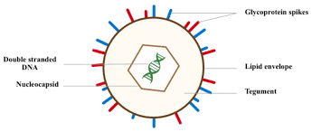
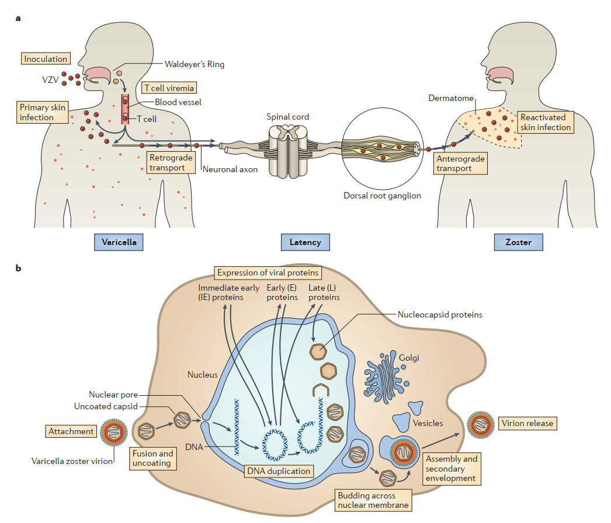
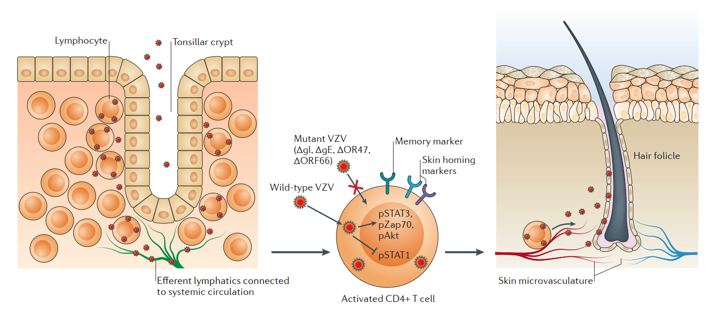
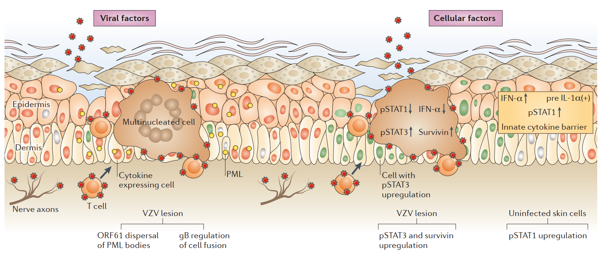
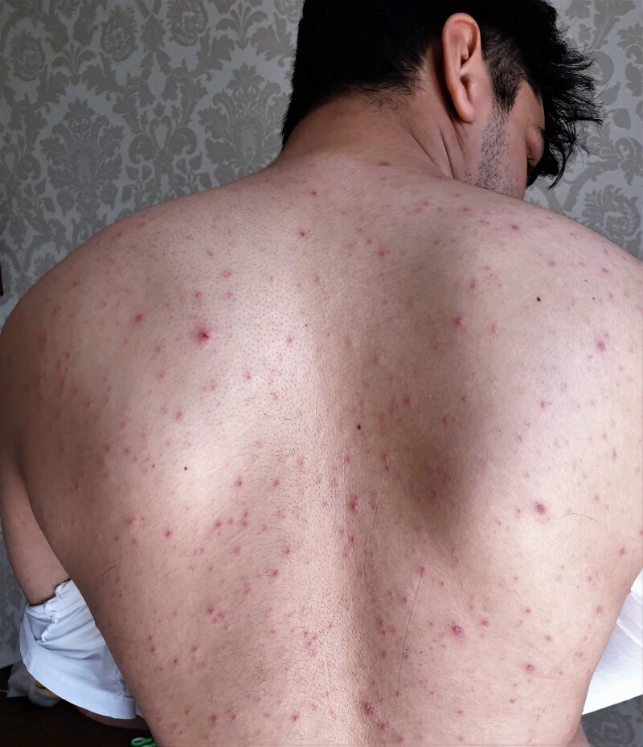
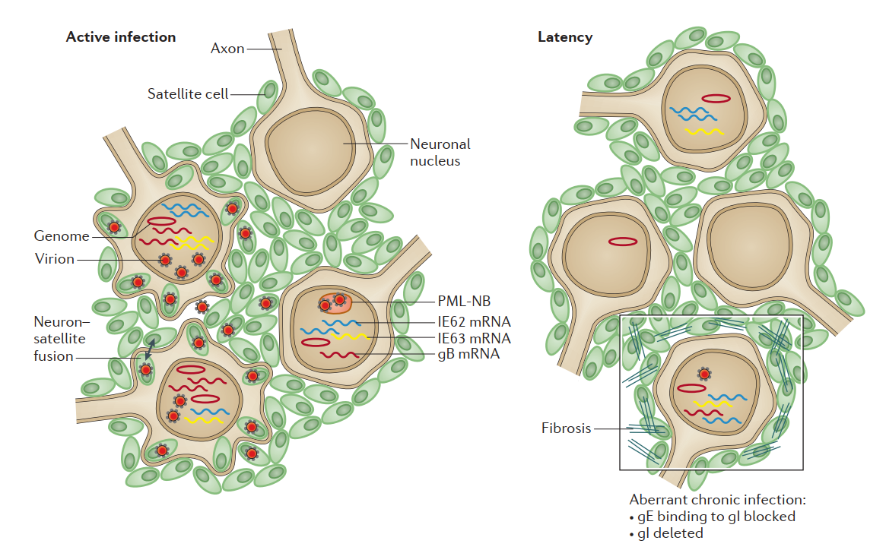
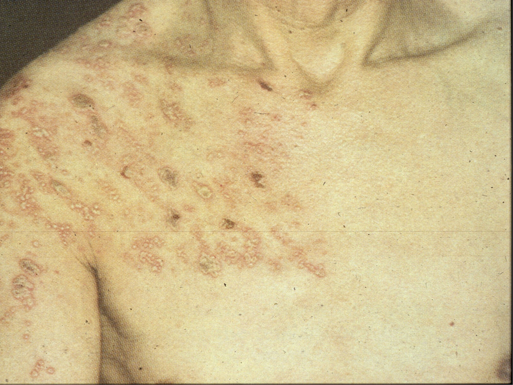
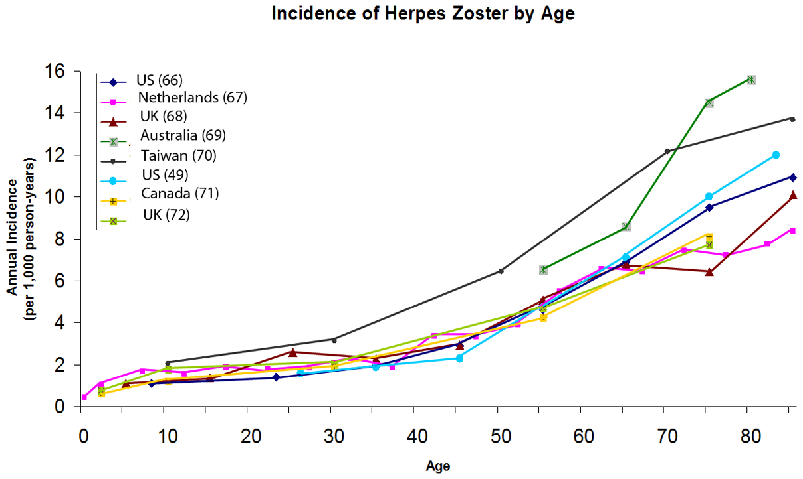

SINH LÝ BỆNH & CƠ CHẾ BỆNH SINH THỦY ĐẬU & HERPES ZOSTER
Varicella-Zoster Virus (VZV) Pathophysiology & Pathogenesis — Phân tích toàn diện cấu trúc phân tử DNA kép, động học vi rút huyết hai pha hướng tế bào T (CLA+/CCR4+), tính hướng da & cơ chế phóng thích virus tự do qua thụ thể M6PR, hợp bào đa nhân syncytia, vận chuyển ngược sợi trục, cơ chế biểu sinh thiết lập ẩn nấp suốt đời (VLT/IE63), cơ chế tái hoạt động tạo Zona & viêm hạch hoại tử (Ganglionitis), cơ chế đau thần kinh sau Zona (PHN) qua kênh ion Nav1.8 và các chiến lược miễn dịch dự phòng (Vắc-xin thế hệ mới Shingrix, VZIG, kháng virus đón đầu).
Varicella Zoster Virus (VZV), hay Human alphaherpesvirus 3, là tác nhân gây bệnh độc quyền trên người có khả năng gây ra hai hội chứng lâm sàng khác biệt: Thủy đậu (Varicella) trong đợt nhiễm trùng tiên phát và Zona (Herpes Zoster) khi tái hoạt động sau hàng thập kỷ ẩn nấp trong các hạch cảm giác. Cơ chế bệnh sinh của VZV là một kiệt tác thích nghi sinh học: từ việc lợi dụng tế bào T nhớ làm "xe chuyên chở" hướng da, giảm điều hòa thụ thể M6PR để giải phóng virus tự do ở thượng bì, cho đến phong tỏa phiên mã bằng cơ chế biểu sinh (epigenetic silencing) và cô lập protein điều hòa trong tế bào chất để ẩn náu suốt đời trước hệ miễn dịch.
Phần I: Đặc Điểm Sinh Học & Cấu Trúc Phân Tử của Varicella Zoster Virus (VZV)
VZV là virus thuộc phân họ Alphaherpesvirinae, họ Herpesviridae, chi Varicellovirus. Hạt virion trưởng thành có dạng hình cầu với đường kính từ 180 đến 200 nm, được cấu tạo bởi 4 thành phần phân tử đồng tâm từ trong ra ngoài:
Lõi DNA sợi kép (dsDNA): Phân tử DNA tuyến tính dài khoảng 125.000 bp, chứa ít nhất 71 khung đọc mở (ORFs). Bộ gen ổn định cao, chứa 5 vùng lặp lại ngắn (R1 đến R5) tạo dấu ấn phân lập đặc trưng.
Vỏ Nucleocapsid 20 mặt (Icosahedral): Đường kính ~100 nm, tạo thành từ 162 capsomere lục giác và ngũ giác mã hóa bởi các gen orf20, orf21, orf23, orf33, orf40, orf41.
Chất đệm protein (Tegument): Nằm giữa capsid và vỏ ngoài, chứa các yếu tố điều hòa phiên mã cực sớm IE62 (ORF62/71), IE63 (ORF63/70), cụm gen orf9-orf12 và 2 kinase thiết yếu ORF47, ORF66.
Vỏ màng bọc (Envelope): Màng lipid nguồn gốc tế bào chủ đính các gai glycoprotein dài 8 nm (gB, gC, gE, gH, gI, gK, gL). Điểm độc đáo: VZV không có glycoprotein tương đương gD như HSV.

1. Cơ Chế Lây Truyền & Con Đường Xâm Nhập Niêm Mạc Ban Đầu
- Vật chủ tự nhiên độc quyền: VZV chỉ gây bệnh trên người, hầu như không lây nhiễm hoặc bị giới hạn nghiêm ngặt trên động vật thí nghiệm.
- Đường lây truyền khí dung & tiếp xúc: Virus lây truyền cực mạnh qua khí dung (aerosols) từ dịch mụn nước (thủy đậu hoặc zona), giọt bắn hô hấp, hoặc tiếp xúc trực tiếp nốt ban.
- Thời gian lây truyền: Khả năng lây cao nhất từ 1 - 2 ngày trước phát ban cho đến khi tất cả nốt mụn nước đóng vảy hoàn toàn (thường 5 - 6 ngày sau phát ban ở người miễn dịch bình thường).
- Thụ thể xâm nhập & Phức hợp hòa màng: Gai glycoprotein bám vào Heparan sulfate proteoglycans và thụ thể Insulin-degrading enzyme (IDE) trên bề mặt màng tế bào chủ. Sau đó, phức hợp lõi gB và gH/gL (với sự hỗ trợ của gE/gI) trung gian quá trình hòa màng (membrane fusion) giải phóng capsid và tegument vào tế bào chất.
Phần II: Động Học Vi Rút Huyết & Tính Hướng Tế Bào T (T-Cell Tropism)
Sau khi xâm nhập qua niêm mạc đường hô hấp trên hoặc kết mạc mắt, quá trình sinh bệnh học của thủy đậu tiến triển qua chuỗi động học hai pha vi rút huyết liên kết chặt chẽ với tế bào T:
VZV nhân lên đầu tiên tại tế bào biểu mô niêm mạc hô hấp trên, sau đó nhanh chóng lan đến hạch lympho vùng và mô bạch huyết hầu họng (vòng Waldeyer ở amidan) trong vòng 2 - 4 ngày. Tại hốc amidan, tế bào dendritic (Langerhans, pDC) bị nhiễm sẽ chuyển giao hạt virus sang cho các tế bào T qua tiếp xúc màng.
Sự giải phóng virus từ mô lympho vào tuần hoàn máu tạo nên đợt nhiễm virus huyết tiên phát. Virus theo máu đến các cơ quan hệ lưới nội mô (gan, lách, tủy xương) và nhân lên mạnh mẽ tại đây trong khoảng 1 tuần.
Virus từ các cơ quan nội tạng tái tràn ngập hệ tuần hoàn với số lượng khổng lồ, đưa các tế bào T nhiễm virus đến hệ vi tuần hoàn biểu bì da và các cơ quan đích, khởi phát giai đoạn tiền triệu (sốt, mệt mỏi) và sau đó là phát ban mụn nước thủy đậu toàn thân.

2. Phân Tử Quyết Định Tính Hướng Tế Bào T (T-Cell Tropism)
Trong máu, VZV hầu như không di chuyển dưới dạng virion tự do mà tồn tại dưới dạng vi rút huyết liên kết tế bào (cell-associated viremia), ẩn náu bên trong các tế bào T CD3+ (cả CD4+ và CD8+):
Các tế bào T CD4+ bị lây nhiễm chủ yếu mang kiểu hình tế bào T nhớ hoạt hóa (CD45RO+) biểu hiện mạnh mẽ dấu ấn hướng da: CLA (Cutaneous Leukocyte Antigen) và CCR4 (CC-chemokine receptor 4). Các dấu ấn này dẫn đường cho tế bào T nhiễm bám dính và thoát mạch trực tiếp vào mạng vi mạch da quanh nang lông.
VZV kích hoạt con đường pSTAT3, pZap70, pAkt làm tăng biểu hiện protein chống chết survivin, kéo dài thời gian sống của tế bào T trong máu. Đáng chú ý, virus ức chế hòa màng giữa các tế bào T nhiễm, giúp chúng duy trì dạng đơn lẻ để di chuyển tự do qua lòng vi mạch.

Phần III: Cơ Chế Hướng Da, Hình Thành Mụn Nước & Cơ Chế Thoát Mạch Virus Tự Do
Khi tế bào T nhiễm virus xuyên mạch tại các mao mạch quanh nang lông, virus nhanh chóng lây sang các tế bào sừng (keratinocytes) ở biểu bì và nguyên bào sợi ở trung bì, khởi đầu phản ứng viêm hoại tử và hình thành tổn thương mụn nước đặc trưng:
1. Tạo Hợp Bào Đa Nhân (Syncytia) & Điều Hòa Bởi Motif ITIM Trên gB
- Hòa màng tế bào - tế bào (Cell-cell fusion): Tại da, VZV kích hoạt sự hòa màng trực tiếp giữa các tế bào biểu sừng liền kề tạo thành các tế bào khổng lồ đa nhân (polykaryocytes hay syncytia) dưới sự điều hòa của phức hợp gB và gH/gL.
- Kiểm soát siêu hòa màng bởi motif ITIM: Đuôi tế bào chất của glycoprotein gB chứa một motif ức chế miễn dịch ITIM (Immunoreceptor Tyrosine-based Inhibition Motif). Quá trình phosphoryl hóa gốc Tyrosine 881 (Tyr881) kiểm soát chặt chẽ tốc độ hòa màng. Nếu sự phosphoryl hóa này bị gián đoạn, hiện tượng siêu hòa màng (hyperfusion) bất thường sẽ phá hủy lớp thượng bì quá nhanh, ngăn cản sự hình thành các hạt virion trưởng thành.
- Tiến triển thương tổn lâm sàng: Phản ứng viêm cấp phóng thích histamine và cytokine gây giãn mạch, tạo chuỗi tiến triển nhanh: Dát đỏ (Macules) → Sẩn (Papules) → Mụn nước (Vesicles) → Mụn mủ (Pustules) → Đóng vảy (Crusts) trong vòng 24 - 48 giờ. Tổn thương điển hình là mụn nước nông chứa dịch trong suốt nằm trên nền hồng ban viền quanh (hình ảnh kinh điển: "giọt sương trên cánh hoa hồng" - dewdrop on a rose petal).
Trong ống nghiệm, VZV liên kết cực chặt với tế bào vì các hạt virion mới lắp ráp bị thụ thể Mannose-6-Phosphate Receptor (M6PR) dẫn đường vào endosome muộn/lysosome để tiêu hủy. Tuy nhiên, trong quá trình biệt hóa cuối cùng của tế bào biểu sừng ở lớp nông thượng bì, thụ thể M6PR bị giảm điều hòa (downregulation) triệt để. Sự vắng mặt của M6PR bảo vệ hạt virion khỏi sự phân hủy lysosome, cho phép VZV lắp ráp hoàn chỉnh và giải phóng nồng độ khổng lồ vi rút tự do (cell-free virus) vào dịch mụn nước sát bề mặt da, tạo khả năng lây truyền khí dung cực mạnh.
2. Đặc Điểm Giải Phẫu Bệnh (Histopathology)
Dưới kính hiển vi quang học, vết cạo đáy mụn nước thủy đậu (Tzanck smear) hoặc sinh thiết da biểu hiện tam chứng bệnh học điển hình:
Thoái hóa phồng (Ballooning degeneration): Tế bào biểu sừng phù nề ứ nước, sưng to gấp nhiều lần bình thường.
Hiện tượng tiêu gai (Acantholysis): Đứt gãy cầu liên bào (desmosomes) làm các tế bào sừng tách rời trôi nổi tự do trong khoang mụn nước thượng bì.
Tế bào khổng lồ đa nhân (Multinucleated giant cells): Chứa hàng chục nhân ép sát nhau với chất nhiễm sắc rìa nhân tích tụ sát màng nhân.
Thể bao hàm ưa acid trong nhân (Cowdry type A intranuclear inclusions): Thể vùi ưa eosin đặc trưng của herpesvirus.


Phần IV: Vận Chuyển Ngược Chiều Sợi Trục & Cơ Chế Biểu Sinh Thiết Lập Trạng Thái Ẩn Nấp (Latency)
Trong giai đoạn mụn nước bùng phát ở da, lượng virus tự do dồi dào trong dịch mụn nước tiếp cận trực tiếp với các đầu tận cùng sợi trục thần kinh cảm giác (sensory nerve endings) phân bố ở nhú chân bì và thượng bì:
1. Vận Chuyển Ngược Chiều Sợi Trục (Retrograde Axonal Transport)
- Vị trí độc quyền trong Neuron: Khác với quan niệm cũ cho rằng virus ẩn nấp trong tế bào vệ tinh, nghiên cứu vi phẫu laser (LCM-PCR) chứng minh Neuron là vị trí độc quyền chứa DNA VZV ẩn nấp (chiếm 4% - 5% tổng số neuron hạch cảm giác).
- Tải lượng DNA ẩn nấp: Dao động thấp từ 5 đến 50 bản sao DNA/neuron nhiễm (khoảng 283 bản sao / 105 tế bào hạch), thấp hơn nhiều so với HSV-1. DNA tồn tại dưới dạng phân tử episome vòng độc lập không tích hợp vào hệ gen người.
2. Cơ Chế Biểu Sinh (Epigenetics) & Sự Cô Lập Protein Trong Tế Bào Chất
Heterochromatin đóng với gen Lytic: Promoters của các gen nhân lên lytic (ORF14, ORF36) bị đóng chặt bởi cấu trúc chất nhiễm sắc không acetyl hóa.
Bản phiên mã antisense VLT: Bản phiên mã liên quan ẩn nấp VZV Latency-associated Transcript (VLT) chạy ngược chiều với gen lytic cực sớm ORF61, ức chế biểu hiện ORF61 để giữ hệ gen im lặng.
Bản phiên mã ORF63/IE63: Là bản phiên mã phong phú nhất trong pha ẩn nấp, tổng hợp protein IE63 đóng vai trò chống chết tế bào thần kinh (anti-apoptotic) trước sự thiếu hụt yếu tố tăng trưởng NGF.
Trong pha ẩn nấp, các protein điều hòa phiên mã sống còn IE62, IE63, ORF21, ORF29 bị giữ chặt hoàn toàn trong tế bào chất của neuron, không thể di chuyển vào nhân.
Protein kinase ORF66 (được biểu hiện trong pha ẩn nấp) thực hiện phosphoryl hóa IE62 để ngăn chặn sự xâm nhập nhân của IE62, khóa chặt mọi hoạt động khởi động phiên mã của hệ gen virus.

3. Kiểm Soát Miễn Dịch Trong Pha Ẩn Nấp: Sự Khác Biệt Căn Bản Với HSV-1
- Vắng bóng tế bào T tuần tra tại hạch: Ở người mang HSV-1 ẩn nấp, tế bào T CD8+ liên tục bao quanh neuron ("vòng corona") để giám sát. Ngược lại, ở người nhiễm VZV ẩn nấp, hoàn toàn không có sự thâm nhiễm của tế bào T CD8+ xung quanh neuron.
- Neuron "tàng hình" miễn dịch: Neuron có mức bộc lộ MHC Class I tự nhiên rất thấp, kết hợp với tác dụng của protein ORF66 làm giảm điều hòa MHC Class I, khiến neuron nhiễm VZV trở nên "vô hình" trước tế bào lympho T.
- Quyết định bởi Miễn dịch qua trung gian tế bào (CMI) toàn thân: Sự kiểm soát VZV ẩn nấp phụ thuộc tuyệt đối vào hiệu giá tế bào T đặc hiệu VZV trong tuần hoàn toàn thân, không phụ thuộc vào kháng thể dịch thể.
Phần V: Cơ Chế Tái Hoạt Động (Herpes Zoster), Viêm Hạch Hoại Tử & Biến Chứng Thần Kinh (PHN)
Khi hiệu giá miễn dịch qua trung gian tế bào (T-cell CMI) toàn thân suy giảm xuống dưới ngưỡng bảo vệ sinh lý, VZV sẽ thoát khỏi trạng thái kìm hãm biểu sinh để tái hoạt động gây bệnh cảnh Herpes Zoster (Zona):
Lão hóa miễn dịch (Immunosenescence): Tế bào T đặc hiệu VZV suy giảm tự nhiên từ sau 35 tuổi và giảm sút nghiêm trọng sau 50 - 60 tuổi.
Suy giảm miễn dịch thứ phát: HIV (tăng nguy cơ Zona >10 lần), ung thư máu, hóa trị, thuốc ức chế miễn dịch (corticosteroids, kháng TNF-α, JAK inhibitors), ghép tạng.
Stress thể chất/tâm lý & Chấn thương: Phóng thích glucocorticoid ức chế tạm thời đáp ứng tế bào T.
Sự tổng hợp bản phiên mã lai VLT-ORF63 và protein ORF61 giải phóng IE62/ORF29 từ tế bào chất vào nhân neuron, khởi động phiên mã lytic toàn bộ hệ gen.
VZV kích hoạt hòa màng trực tiếp giữa neuron và tế bào vệ tinh (satellite cells) tạo thành hợp bào đa nhân độc nhất, gây phản ứng viêm hoại tử cấp, chết sợi thần kinh cảm giác và xơ hóa mô hạch nặng nề.
1. Vận Chuyển Xuôi Chiều Sợi Trục & Phân Bố Theo Khoanh Da (Dermatome)
Virion mới lắp ráp được vận chuyển xuôi chiều sợi trục (Anterograde axonal transport) hướng về ngoại vi, giải phóng tại các đầu mút thần kinh cảm giác ở da để gây tổn thương mụn nước nhóm lại thành chùm trên nền hồng ban. Đặc điểm kinh điển: giới hạn nghiêm ngặt theo một khoanh da (dermatome) đơn độc và không bao giờ vượt qua đường giữa cơ thể.


2. Cơ Chế Bệnh Sinh Đau Dây Thần Kinh Sau Zona (Postherpetic Neuralgia - PHN)
Đau thần kinh sau zona (PHN) là biến chứng mãn tính tàn tật nhất, định nghĩa là cơn đau thần kinh kéo dài ≥ 3 tháng sau khi tổn thương da Zona đã lành hoàn toàn. Cơ chế bệnh sinh bao gồm tam giác tổn thương điện - sinh học thần kinh:
Viêm hoại tử hạch và thoái hóa sợi trục/khử myelin làm hư hại màng tế bào thần kinh còn sống sót. Các đầu tận mút thần kinh bị hạ thấp ngưỡng kích hoạt điện thế màng và tự động phát xung điện tự phát (spontaneous ectopic firing), gây cảm giác đau rát bỏng liên tục (burning pain) và đau nhói như dao đâm (stabbing pain).
Xung động đau dồn dập kéo dài từ ngoại vi vào sừng sau tủy sống gây tái cấu trúc khớp synap thần kinh trung ương. Các kích thích cơ học vô hại nhẹ (quần áo cọ xát, gió thổi) bị khuếch đại thành cảm giác đau dữ dội: hiện tượng loạn cảm đau (Allodynia) và tăng cảm giác đau (Hyperalgesia).
Nghiên cứu điện sinh lý thần kinh chỉ ra rằng các chủng VZV phân lập từ bệnh nhân bị PHN có khả năng kích hoạt làm tăng vọt mật độ dòng điện Natri (sodium current density) qua kênh Nav1.8 trên màng tế bào thần kinh cảm giác cao hơn rõ rệt so với chủng từ bệnh nhân Zona không bị PHN. Sự gia tăng dòng Natri qua Nav1.8 trực tiếp duy trì tính hưng phấn điện học quá mức của sợi dẫn truyền cảm giác đau.
3. Các Biến Chứng Thần Kinh Nguy Hiểm Khác
- Bệnh lý mạch máu do VZV (VZV Vasculopathy) & Đột quỵ (Stroke): VZV là herpesvirus duy nhất gây đột quỵ. Virus tái hoạt di chuyển theo dây thần kinh vận mạch xâm nhập vào thành các động mạch não lớn và nhỏ, nhân lên trong lớp áo giữa và nội mạc gây viêm mạch (vasculitis), hẹp lòng mạch, huyết khối tại chỗ dẫn đến nhồi máu não hoặc phình vỡ mạch gây xuất huyết dưới nhện/xuất huyết não.
- Hội chứng Ramsay Hunt (Herpes Zoster Oticus): Tái hoạt tại hạch gối (geniculate ganglion) của dây thần kinh VII. Biểu hiện: Liệt mặt ngoại biên một bên kèm mụn nước đau ở ống tai ngoài/màng nhĩ/lưỡi, đi kèm tổn thương dây thần kinh số VIII (ù tai, điếc tiếp nhận, chóng mặt).
- Zoster Sine Herpete (ZSH): Thể lâm sàng hiểm hóc khi VZV tái hoạt gây đau thần kinh dữ dội theo khoanh da hoặc biến chứng mạch máu não nhưng hoàn toàn không có phát ban mụn nước ngoài da. Chẩn đoán xác định dựa vào PCR tìm DNA VZV hoặc kháng thể IgG kháng VZV trong dịch não tủy (CSF).
- Viêm tủy cắt ngang (Myelitis) & Viêm não - màng não: Virus lan ngược dòng từ hạch rễ sau vào nhu mô tủy sống gây liệt hai chi dưới và rối loạn cơ vòng.
Phần VI: Bảng Đối Chiếu So Sánh Toàn Diện: Varicella Zoster Virus (VZV) vs. Herpes Simplex Virus 1 (HSV-1)
Mặc dù cùng thuộc phân họ Alphaherpesvirinae, VZV và HSV-1 sở hữu những đặc tính sinh học, động thái ẩn nấp và cơ chế tái hoạt động hoàn toàn dị biệt:
| Đặc tính Sinh lý Bệnh | Varicella Zoster Virus (VZV) | Herpes Simplex Virus 1 (HSV-1) |
|---|---|---|
| Nhiễm trùng tiên phát (Primary infection) | Lan tỏa toàn thân (Disseminated) với sốt, nhiễm virus huyết hai pha và phát ban mụn nước khắp cơ thể (Thủy đậu). | Khu trú tại chỗ (Localized) như viêm loét niêm mạc miệng, môi (gingivostomatitis) hoặc sinh dục. |
| Đường xâm nhập vào hạch cảm giác | Hai con đường: Qua dòng máu (T-cell viremia) và vận chuyển ngược chiều sợi trục từ tổn thương da. | Gần như duy nhất: Vận chuyển ngược chiều sợi trục từ ổ loét niêm mạc tại chỗ. |
| Phân bố giải phẫu hạch ẩn nấp | Toàn bộ trục thần kinh (Neuraxis): Hạch sọ (sinh ba, hạch gối), hạch rễ sau cổ, ngực, thắt lưng, cùng và hạch tự chủ. | Khu trú vùng đầu cổ: Giới hạn chủ yếu ở hạch sinh ba (Trigeminal Ganglia - TG). |
| Tần suất tái hoạt động lâm sàng | Thường chỉ xảy ra 1 lần duy nhất trong đời ở người có miễn dịch bình thường. | Tái phát nhiều lần thường xuyên (Recurrent) trong suốt cuộc đời. |
| Ảnh hưởng của tuổi tác | Tần suất tăng mạnh theo tuổi do suy thoái miễn dịch tế bào T (Immunosenescence), bùng phát sau 50 - 60 tuổi. | Tần suất tái phát có xu hướng giảm dần theo tuổi tác. |
| Tái hoạt động không triệu chứng (Asymptomatic shedding) | Không xảy ra; mọi đợt tái hoạt đều đi kèm triệu chứng đau lâm sàng và/hoặc tổn thương da. | Xảy ra rất thường xuyên với hiện tượng thải virus qua nước bọt/dịch tiết niêm mạc mà không có vết loét. |
| Phân bố thương tổn khi tái hoạt | Phân bố theo dải khoanh da (Dermatome) đơn độc, giới hạn sắc nét dừng ở đường giữa. | Tổn thương khu biệt tại chỗ (Focal) tại đầu mút thần kinh cảm giác (ví dụ: mép môi). |
| Yếu tố kích hoạt tái hoạt | Suy giảm miễn dịch qua trung gian tế bào (CMI) toàn thân, lão hóa, suy giảm miễn dịch nặng. | Kích thích vật lý tại chỗ rõ ràng: Ánh sáng tia cực tím (UV), sốt, chấn thương cơ học, kinh nguyệt. |
| Triệu chứng đau lâm sàng | Đau đớn dữ dội (Severe neuropathic pain) từ giai đoạn tiền triệu và nguy cơ biến chứng PHN mãn tính. | Đau nhẹ, cảm giác châm chích ngứa rát tại chỗ (Mild tingling or none). |
| Biểu hiện gen trong pha ẩn nấp | Đa dạng: mRNA và protein của ORFs 4, 21, 29, 62, 63, 66 và bản phiên mã VLT. | Rất hạn chế: Chỉ bộc lộ duy nhất LAT RNA (không biểu hiện protein virus trong pha ẩn nấp bình thường). |
| Giám sát của tế bào T CD8+ tại hạch | Không có tế bào T thâm nhiễm bảo vệ xung quanh neuron ẩn nấp; neuron hoàn toàn "tàng hình". | Có hàng rào tế bào T CD8+ ("corona") vây quanh neuron nhiễm để giám sát và tiết Granzyme B dập tắt tái hoạt. |
| Hòa màng tế bào trong hạch (Fusion) | Có xảy ra; tạo hợp bào đa nhân giữa neuron và tế bào vệ tinh gây hoại tử xơ hóa hạch (Ganglionitis). | Không xảy ra hiện tượng hòa màng tế bào trong hạch thần kinh. |
Phần VII: Các Chiến Lược Phòng Ngừa Bằng Vắc-Xin & Dự Phòng Sau Phơi Nhiễm (PEP)
1. Vắc-Xin Thủy Đậu (Varicella Vaccine): Phân Loại & Hiệu Lực Bảo Vệ
Tất cả các vắc-xin thủy đậu lưu hành hiện nay đều là vắc-xin sống giảm độc lực chủng Oka (phân lập bởi Michiaki Takahashi năm 1974):
Vắc-xin đơn giá: Varivax (≥1.350 PFU) và Varilrix (≥2.000 PFU). Dung nạp rất tốt, ít tác dụng phụ.
Vắc-xin phối hợp MMRV: ProQuad (≥9.772 PFU) và Priorix-Tetra. Do hiện tượng nhiễu loạn miễn dịch, hàm lượng kháng nguyên VZV được nâng lên rất cao. Lưu ý: Có sự gia tăng nhẹ nguy cơ co giật do sốt ở liều 1 cho trẻ 12 - 23 tháng tuổi (thêm 1 ca / 2.300 - 2.700 liều tiêm).
Phác đồ 1 liều: Hiệu lực bảo vệ ~80% với mọi thể bệnh, nhưng đạt ≥95% - 100% với thể trung bình/nặng. Khoảng 9% - 14% gặp thất bại vắc-xin nguyên phát, dẫn đến các đợt thủy đậu bùng phát (breakthrough varicella) thể nhẹ (<50 nốt ban, không biến chứng).
Phác đồ 2 liều (Chuẩn khuyến cáo): Nâng hiệu lực bảo vệ lên 93% - 98.3% với mọi thể bệnh và 100% thể nặng; loại bỏ hoàn toàn các ổ dịch bùng phát sau 7 - 10 năm theo dõi.
| Loại Vắc-xin Đơn Giá | Phòng ngừa Mọi thể Thủy đậu | Phòng ngừa Thể Trung bình & Nặng | Phòng ngừa Thể Nặng (Severe) |
|---|---|---|---|
| Varivax (Oka/Merck) | Trung vị 83% (44% - 100%) | Trung vị 96.5% (86% - 100%) | Trung vị 100% (97% - 100%) |
| Varilrix (Oka-RIT) | Trung vị 76% (20% - 92%) | Trung vị 95.0% (80% - 100%) | Trung vị 100% |
| Okavax (Biken) | 90% | 100% | 100% |
Theo WHO (2014), việc đưa vắc-xin thủy đậu vào chương trình tiêm chủng mở rộng quốc gia bắt buộc phải duy trì độ bao phủ bền vững ≥ 80%. Nếu tỷ lệ tiêm chủng chỉ đạt mức trung bình (20% - 80%), nó sẽ làm giảm sự lưu hành của virus hoang dại nhưng không đủ tạo miễn dịch cộng đồng, dẫn đến sự dịch chuyển tuổi nhiễm bệnh từ trẻ nhỏ sang thanh thiếu niên và người lớn. Ở người lớn, thủy đậu có tỷ lệ biến chứng viêm phổi hoại tử và tử vong cao gấp nhiều lần so với trẻ nhỏ.
2. Vắc-Xin Phòng Ngừa Herpes Zoster: Cuộc Cách Mạng Zostavax vs. Shingrix
Cấu trúc: Virus sống giảm độc lực chủng Oka với tải lượng virus cao gấp 14 lần vắc-xin trẻ em Varivax để kích hoạt lại miễn dịch tế bào đã suy thoái.
Hiệu quả bảo vệ: Giảm 51.3% tỷ lệ mắc Zona và 66.5% biến chứng PHN ở người ≥60 tuổi.
Hạn chế: Hiệu quả giảm sâu theo tuổi (chỉ còn 18% ở người ≥80 tuổi); chống chỉ định tuyệt đối ở người suy giảm miễn dịch do nguy cơ nhiễm virus vắc-xin lan tỏa tử vong.
Cấu trúc: Vắc-xin tiểu đơn vị tái tổ hợp chứa Glycoprotein E (gE) kết hợp hệ thống chất bổ trợ đột phá AS01B.
Hiệu quả bảo vệ vượt trội: Giảm tới 97% nguy cơ mắc Zona và PHN ở cả người khỏe mạnh và người ≥70 tuổi; hiệu lực không suy giảm theo tuổi tác.
Ưu điểm tuyệt đối: Không chứa virus sống → An toàn tuyệt đối và được chỉ định ưu tiên hàng đầu cho người suy giảm miễn dịch và người cao tuổi.
3. Các Chiến Lược Dự Phòng Sau Phơi Nhiễm (Post-Exposure Prophylaxis - PEP)
Khi cá thể chưa có miễn dịch tiếp xúc trực tiếp với bệnh nhân thủy đậu hoặc zona, 3 chiến lược can thiệp cần được kích hoạt dựa trên tình trạng miễn dịch và mốc thời gian vàng:
Đối tượng: Người khỏe mạnh ≥12 tháng tuổi, có đủ đáp ứng miễn dịch và không có chống chỉ định vắc-xin sống.
Thời gian vàng: Tiêm trong vòng 3 ngày (72 giờ) sau phơi nhiễm (hiệu quả tối ưu) hoặc tối đa trong vòng 5 ngày (120 giờ).
Hiệu quả: Phòng ngừa bệnh lâm sàng ≥90% hoặc giảm nhẹ đáng kể mức độ nặng.
Đối tượng: Nhóm nguy cơ cao chống chỉ định vắc-xin sống (Phụ nữ có thai chưa miễn dịch, người suy giảm miễn dịch nặng, trẻ sơ sinh có mẹ mắc thủy đậu 5 ngày trước đến 48 giờ sau sinh, trẻ sinh non nằm viện).
Chế phẩm & Liều:
- VZIG / VariZIG: 125 U / 10 kg tiêm bắp (tối đa 625 U). Dùng tối ưu trong 96 giờ, hiệu lực lên tới 10 ngày sau phơi nhiễm.
- IVIG (Thay thế khi thiếu VZIG): 400 - 500 mg/kg truyền tĩnh mạch 1 liều duy nhất.
Chỉ định: Lựa chọn thay thế khi VZIG không có sẵn hoặc đã quá thời gian tiêm vắc-xin.
Nguyên lý thời điểm: Không dùng ngay sau tiếp xúc (vì tải lượng virus quá thấp). Bắt đầu dùng từ ngày thứ 7 đến ngày thứ 10 sau phơi nhiễm và kéo dài liên tục 7 ngày (đánh chặn đợt vi rút huyết thứ cấp).
Phác đồ:
- Acyclovir: 20 mg/kg/liều uống 4 lần/ngày (tối đa 800 mg/liều). Phụ nữ mang thai: 800 mg uống 4 lần/ngày (ngày 7-14).
- Valacyclovir: 20 mg/kg/liều uống 3 lần/ngày (tối đa 1.000 mg/liều).
📚 Tài liệu Tham khảo Chính (AMA Citation Style)
- 1. Zerboni L, Sen N, Oliver SL, Arvin AM. Molecular mechanisms of varicella zoster virus pathogenesis. Nature Reviews Microbiology. 2014;12(3):197-210.
- 2. Cohen JI. Chapter 38: VZV: molecular basis of persistence (latency and reactivation). In: Arvin A, et al., eds. Human Herpesviruses: Biology, Therapy, and Immunoprophylaxis. Cambridge University Press; 2007.
- 3. World Health Organization. Varicella and herpes zoster vaccines: WHO position paper, 20 June 2014. Weekly Epidemiological Record. 2014;89(25):265-288.
- 4. Kennedy PGE. The Spectrum of Neurological Manifestations of Varicella-Zoster Virus Reactivation. Viruses. 2023;15(8):1663.
- 5. Mallick-Searle T, Snodgrass B, Brant JM. Postherpetic neuralgia: epidemiology, pathophysiology, and pain management pharmacology. Journal of Multidisciplinary Healthcare. 2016;9:447-458.
- 6. Frazer IH, Levin MJ. Modern Vaccines: Vaccines to manage persistent latent infections - Shingles. Current Opinion in Virology. 2011;1(5):372-378.
- 7. SAGE Working Group on Varicella and Herpes Zoster Vaccines. Background Paper on Varicella Vaccine. Geneva, Switzerland: World Health Organization; 2014.
- 8. Royal College of Obstetricians and Gynaecologists. Green-top Guideline No. 13: Chickenpox in Pregnancy. London, UK: RCOG/UKHSA; 2024.
- 9. Chicago Department of Public Health. Clinical Guidelines for Management of Healthcare Personnel Exposed to Varicella. Chicago, IL: CDPH; 2022.
- 10. Iheukwumere IH, et al. Varicella Zoster Virus Infection: Molecular Insights, Clinical Spectrum, and Advances in Prevention and Management. Health Sci Res Int. 2025;1(1):16-24.
- 11. Eshleman E, Shahzad A, Cohrs RJ. Varicella zoster virus latency. Future Virology. 2011;6(3):341-355.
- 12. StatPearls. Varicella-Zoster Virus (Chickenpox). Treasure Island (FL): StatPearls Publishing; 2024.